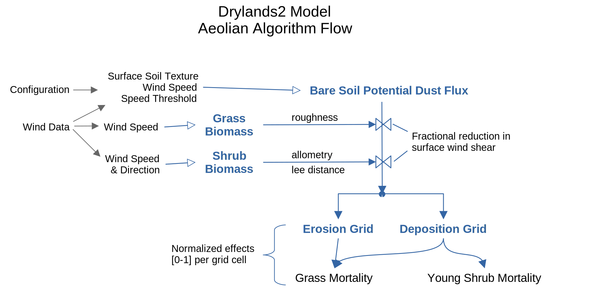

Drylands2 Model: Aeolian Effect Algorithms¶
- subtitle:
Jornada Basin LTER, New Mexico State University
- organization:
Jornada Basin LTER, New Mexico State University
- contact:
Introduction¶
Goal¶
Estimate effects upon plants by erosion or deposition of aeolian transport of soil. The intent is to not track actual amounts of material transported across a grid, but to track the effects of erosion and deposition upon plant growth and mortality.
Grasses affect the potential wind shear at the soil surface by adding surface roughness non-linearly proportional to aboveground biomass. Shrubs affect wind shear through allometric shape based upon species and biomass, producing a lee distance over which wind shear increases.
These algorithms build grids of locations that will experience deposition or erosion. The effect of plant biomass upon reducing surface wind shear is estimated as a fraction (0-1) where 0 = no wind shear and 1 = no reduction. The relative magnitude of deposition or erosion will be indicated by a fraction (0-1) where 0 is none, and 1 is maximum.
Erosion effects apply to mortality of grass and young shrubs. Deposition effects nutrient accumulation under shrubs (not yet implemented).
{kind=link}
Input Data and Configuration¶
Wind Data¶
Daily Wind Speed and Direction¶
Driving daily wind data for the aeolian algorithms is a file of daily wind speed (m/s) and the “from” direction (degrees clockwise from north). Read the data with this GNU Octave statement which creates a WindData object for the specified data file:
fileNameCSV = 'dailyWindSpeed.csv';
wind = WindData( fileNameCSV );
See help WindData for details about this class.
Here is a snippet of data from a CSV file:
"year","month","day","dayNumber","dayOfYear","windDir","wsMean","wsMax"
2013,8,6,218,218,3.822,4.134,8.6
2013,8,7,219,219,2.449,3.254,8.6
2013,8,8,220,220,0.844,1.718,7.099
Histograms of that wind data is available in the image file:
doc/plot-dailyWindSpeed.png
Use the function getWind to retrieve the wind direction and mean and maximum wind speed for one or more dates (getWind expects a global windData object):
global windData = WindData( fileNameCSV );
dataWind = getWind( year, doy );
The return value “dataWind” is a structure containing the fields year, doy, dir, wsMean, wsMax.
See help getWind for details about this function.
Alternatively, use the get member function to obtain the raw data:
dataWind = wind.get( years, doys, true );
Erosion threshold wind speeds¶
Threshold wind speeds at 2.4 m a.g.l. are provided by Webb et al. (2016), in table 4. “Here Ut is the wind speed (2.4 m above ground level) at which soil entrainment is initiated, producing a Wenglor pulse count of 10 grains per minute.”
Plant Biomass¶
Maximum ANPP (from Muldavin et al. (2008), figs 3, 4):
black grama ~60 g/m2/year, or ~100 for multispecies grassland.
creosote ~70 g/m2/year, or ~85 for multispecies shrubland.
Bmax parameter in the configuration for plants:
(TODO: Maximum biomass per species)
Aeolian Submodel Configuration¶
Configuration specifies surface texture and entrainment thresholds,
and additional algorithm-specific parameters, and is stored in a JSON file.
An example of a JSON configuration file is config.json, containing a
section aeolian.
Each plant has a subsection aeolianEffect containing species-specific parameters for the aeolian algorithms.
Read the configuration with these GNU Octave statements which read the configuration data using the function readConfigJSON, and creates a structure containing the configuration values.
cfg = readConfigJSON( 'config.json' );
The function uses the package DrylandsLib.
When these algorithms are implemented in the Drylands2 model, this configuration will be incorporated into the model configuration.
Algorithms¶
The algorithms do not track absolute amounts of sediment fluxes, instead use effects represented as fractions (0-1) representing the intensity of each effect upon aeolian-induced erosion, deposition, or mortality.
Information Flow¶
Inputs:
Configuration parameters.
Modeled aboveground biomass for grass and shrub.
Daily wind speed and direction.
Bare soil erodibility parameters (from configuration parameters).
Products:
grass: reduction on wind shear at soil surface per grid cell
shrub: lee affect reducing surface wind shear
bare soil: relative erodibility per cell
Outputs:
Per grid cell intensity of deposition and erosion.
Per grid cell intensity of grass and young shrub mortality.
Effects upon wind shear¶
Estimate the influence of aboveground biomass upon the potential for dampening or blocking wind shear near the surface.
Biomass affects the wind shear stress at the soil surface. Separately create grids of wind shear reduction fraction for grass and shrub biomass. Do this monthly, or when biomass changes significantly.
1a. Grasses reducing wind shear¶
Estimate the influence of aboveground grass biomass upon the potential for blocking or slowing the wind near the surface. More aboveground biomass has greater potential for reducing wind shear. Biomass < threshold amount = zero wind shear dampening effect.
Ludwig et al. (2005) provides fitted relationships between canopy size and biomass.
Nafus et al. (2009, table 1) has allometric vs biomass relationship for black grama.
Li et al. (2013) provides the roughness equations to estimate dampening of wind shear stress.
Webb et al. (2016) has relationships between canopy height and flux monthly (see tables 1-3), and modelled wind threshold speeds (table 5).
Function: grassEffect Uses: GrassAllometry
Example:
agbm = [ 2.5059 0 277.3153 115.0669 0 291.6721 198.6775 0 89.8183 16.8622 257.6582 251.1427 294.5175 207.4992 292.2601 142.3390 0 0 92.6232 217.2935 0 97.5813 0 227.0267 0 ]; minThreshold = 5.0; Bmax = 319.0; [effect, params] = grassEffect( agbm, minThreshold, Bmax ); % effect = NA NA 0.9037 0.9996 NA % 0.9036 0.9044 NA 1.0000 0.9082 % 0.9039 0.9039 0.9036 0.9985 0.9036 % 0.9051 NA NA 1.0000 0.9042 % NA 0.9057 NA 0.9983 NA
1b. Shrubs leeward cells:¶
Make grid marking leeward cells relative to vegetated cells that can dampen wind shear near the surface. Deposition can occur downwind of a shrub.
Inputs are a grid of logical values specifying cells that have enough shrub biomass to affect leeward cells; and the wind direction (as degrees clockwise from north).
Function: shrubLeewardGrid Used in function shrubEffect.
Example:
fillValues = 2:6; shrubLeewardGrid( a, windDir, fillValues ) % ans = % gridShrubs = to S (0 deg): to W (90 deg): to SE (135 deg): % 0 0 0 1 0 0 0 0 0 0 4 3 2 0 0 0 0 0 0 0 % 0 0 1 0 0 0 0 0 2 0 3 2 0 0 0 0 0 0 0 2 % 0 1 0 1 0 0 0 2 0 0 2 0 2 0 0 0 0 0 0 0 % 0 0 0 0 0 0 2 3 2 0 0 0 0 0 0 0 0 2 0 2 % 1 0 1 0 0 0 3 0 3 0 0 2 0 0 0 0 0 0 3 0
1c. Shrubs reducing wind shear:¶
- Cells with shrub biomass > threshold biomass (small value)
provide a lee effect on wind shear. See Li et al. (2013). Fractional reduction in lee cells decreases with distance from the shrub. Uses shrub allometry - biomass and shrub shape is proportional to magnitude of lee effect.
Li et al. (2013) provides the roughness equations to estimate dampening of wind shear stress.
Class ShrubAllometry provides estimates profile area (perpendicular to the wind direction).
Function: shrubEffect
Uses results from classes ShrubAllometry, LeeWindShear, and functions shrubLeewardGrid, avgLeeSize, leesFindFill.
Example:
bmShrubs = [ 0 139.4415 0 0 132.8190 0 0 124.4070 0 0 0 0 0 0 0 0 155.5717 73.6166 0 0 164.2417 0 21.7593 0 128.9104 ]; cfgShrub = struct( 'name', 'creosote bush', ... 'Bmax', 222, ... 'aeolianEffect', struct('minThreshold', 50.0) ); wind = struct( 'dir', 0.0, 'wsMax', 15.0 ); % wind from the north [effect, params] = shrubEffect( bmShrubs, cfgShrub, wind ); % effect = % NA 0 NA NA 0 % NA 0.2854 0 NA 0.2854 % NA 0.4599 0.2854 NA 0.4599 % NA 0 0 NA 1.0000 % 0 0.2854 0.2854 NA 0
Soil erosion and deposition potential¶
These steps run daily whenever windspeed > shear stress threshold.
Considerations for thresholds and fluxes:¶
Erosion flux: Use scalar value for flux from table above (1000 g/m/d). Value is per grid cell, so potential removal per cell = 1000 g/m2/d.
Single value for entire grid.
Hours/Month wind speed > threshold: - Webb et al., 2016; see figure 4a; hours/month > 5 m/s. - Bergametti and Gillette, 2010: see figure 3; hours/month > 8 m/2. - Temporal pattern is similar - low in Jan, high in spring to early summer. - Magnitudes for 5 m/s threshold ~10x greater than 8 m/s. - Webb (table 3) daily fluxes are generally similar or higher than
B&G fluxes (table 7).
2a. Estimate bare soil erosion potential¶
Zero if wind speed < threshold, or the sum of the potential flux per texture for windspeed > threshold, normalized to the range 0-1. The erosion potential per cell is proportional to the fraction of cell area that has a wind speed threshold at or below the current wind speed. Potential is zero (not erodible at the current wind speed) to 1 (maximum erosion potential). All bare soil cells have the same value.
Function: bareSoilErosionPotential
Bare soil parameters are provided in the configuration file. E.g.:
# Grid average surface texture fractions (See class Surface) for bare soil # These should sum to 1.0. "textureFractions": { "fine" : 0.30, "coarse" : 0.30, "gravel" : 0.20, "crust" : 0.20 }, # Wind threshold for entrainment for each texture (m/s). # Wind speed above this allows significant saltation. # E.g. see Webb et al., 2016; Bergametti and Gillette, 2010. "thresholdSpeed": { "fine" : 5, "coarse" : 8, "gravel" : 15, "crust" : 100 }Example:
% make bare soil grid bsGrid = false( 5, 5 ); bsGrid([3, 6, 14, 17, 18, 23]) = true; % wind data: wind = struct( 'dir', 0.0, 'wsMax', 8.0 ); % bare soil erosion potential: epGrid = bareSoilErosionPotential( txFractions, thSpeeds, wind.wsMax, bsGrid ) % epGrid = % 0 0.8550 0 0 0 % 0 0 0 0.8550 0 % 0.8550 0 0 0.8550 0.8550 % 0 0 0.8550 0 0 % 0 0 0 0 0
2b. Combine the grass, shrub and soil erosion factors¶
Combine the effects of plants and soil surface upon reducing the wind shear stress at the soil surface. Effects are a values per grid cell in the range 0-1.
Function: windShearEffects
2c. Make a grid of potentially aeolian-erodible cells¶
These are cells that are not shrub, shrub cells with a minimum of biomass, and cells not leeward of shrubs.
Inputs are a grid of shrub biomass, a biomass amount below which the cell is considered potentially erodible, and the grid returned by shrubLeewardGrid().
Returns a grid of relative amount of erosion per cell in the range 0-1, where 0 = no erosion, and 1 = maximum erosion.
Function: erosionGrid
2d. Deposition factors grid¶
For effective wind shear < wind speed threshold for bare soil, depostition can occur in cells with shrubs, shrub lee cells, and grass cells with > minimum biomass.
Returns a grid of deposition factors in the range 0-1, where 0 = no deposition, and 1 = maximum deposition.
Function: depositionGrid
Actual erosion and deposition flux effect upon plants¶
(TODO: Actual upon plants)
3a. Grass mortality¶
Model grass mortality due to burial by aeolian dust deposition. See the document GrassBiomassCovChg for equations.
Function: mortaliltyGrass
3b. Young shrub mortality¶
Model young shrub mortality due to burial by aeolian dust deposition.
Given the deposition intensity d = [0-1] in a cell containing shrubs with biomass < threshold, then the mortality of the shrub will be a function of a random value r = [0-1] * d compared to a threshold probability p = [0-1]:
m = r * d > p : if true, shrub seedling dies
This is essentially a Bernoulli distribution application using the deposition intensity. If p = 0.5, then during a maximal deposition event (d = 1) approximately half the shrub seedlings will die.
Function: mortaliltyShrub
3c. Nutrient deposition under shrubs¶
(TODO)
Terminology¶
- Ap :
obstruction (plant or rock) profile area perpendicular to the wind direction (m2).
- h :
grass height (m)
- z0 :
“roughness length”. Equals the height at which the wind speed becomes zero due to friction. Is proportional to threshold friction velocity.
- U :
wind speed measured at z (m/s)
- u* :
wind shear friction velocity (aka “ua”) (m/s)
- u*s :
wind shear friction velocity at the soil surface (aka “uas”) (m/s)
- lambda :
lateral cover ~ profile area of plant (unitless)
- L :
lee length; average or specific distance between plants (m)
Citations¶
Bergametti, G., and D. A. Gillette (2010). Aeolian sediment fluxes measured over various plant/soil complexes in the Chihuahuan desert. J. Geophys. Res., 115, F03044, doi:10.1029/2009JF001543
Li, J., G. S. Okin, J. E. Herrick, J. Belnap, M. E. Miller, K. Vest, and A. E. Draut (2013). Evaluation of a new model of aeolian transport in the presence of vegetation. J. Geophys. Res. Earth Surf., 118:288–306, doi:10.1002/jgrf.20040
Ludwig, J. A., Reynolds, J. F., & Whitson, P. D. (1975). Size-biomass Relationships of Several Chihuahuan Desert Shrubs. The American Midland Naturalist, 94(2):451–461. https://doi.org/10.2307/2424437
Muldavin, Esteban H., Douglas I. Moore, Scott L. Collins, Karen R. Wetherill, and David C. Lightfoot (2008). Aboveground net primary production dynamics in a northern Chihuahuan Desert ecosystem. Oecologia 155(1):123-132.
Nafus, Aleta M., Mitchel P. McClaran, Steven R. Archer, Heather L. Throop (2009). Multispecies Allometric Models Predict Grass Biomass in Semidesert Rangeland. Rangeland Ecol Manage 62:68–72.
Webb, Nicholas P., Magda S. Galloza, Ted M. Zobeck, Jeffrey E. Herrick (2016). Threshold wind velocity dynamics as a driver of aeolian sediment mass flux. Aeolian Research 20:45–58.
Document History¶
Revision Date |
Model Version |
Description |
|---|---|---|
2025.08.18 |
6.0 |
Author: Thomas E. Hilinski <hilinski@nmsu.edu> |
Appendix 1: Allometry equations for shrubs¶
From Ludwig et al. (1975), table 2, aboveground volume and spatial area of an individual is given in terms of biomass, from regressions on field measurements. The intent here is to get the cross-sectional area as a function of biomass and the height of a shrub from biomass.
If X=r*h,
and B/m = pi/3*h*r^2,
and sqrt(B/n) = pi*r^2,
what is X as a function of B?
Let n = 1504.
Let m = 5836.
See the full solution in creosote-biomass-lateralCover-equation.pdf
Area(biomass) = 0.0018 * B^(0.75)
If X=pi*r*h/2,
and B/m = 4/3*pi*r*h^2,
and sqrt(B/n) = pi*r^2,
what is X as a function of B?
Let n = 287.
Let m = 2778.
See the full solution in mequite-biomass-lateralCover-equation.pdf
Area(biomass) = 0.00762 * B^(0.6250)
Given the equations:
V = (pi/3)*r^2*h,
A = pi * r^2.
B = m * V,
B = n * A^2,
what is h as a function of B?
Let n = 1504.
Let m = 5836.
See the full solution in creosote-biomass-height-equation.pdf
h(biomass) = 0.01994 * sqrt(biomass)
Given the equations:
V = 4/3*pi*r*h^2,
A = pi * r^2,
B = m * V,
B = n * A^2,
what is h as a function of B?
Let n = 287.
Let m = 2778.
See the full solution in mequite-biomass-height-equation.pdf
h(biomass) = 0.02502 * biomass^(0.3750)